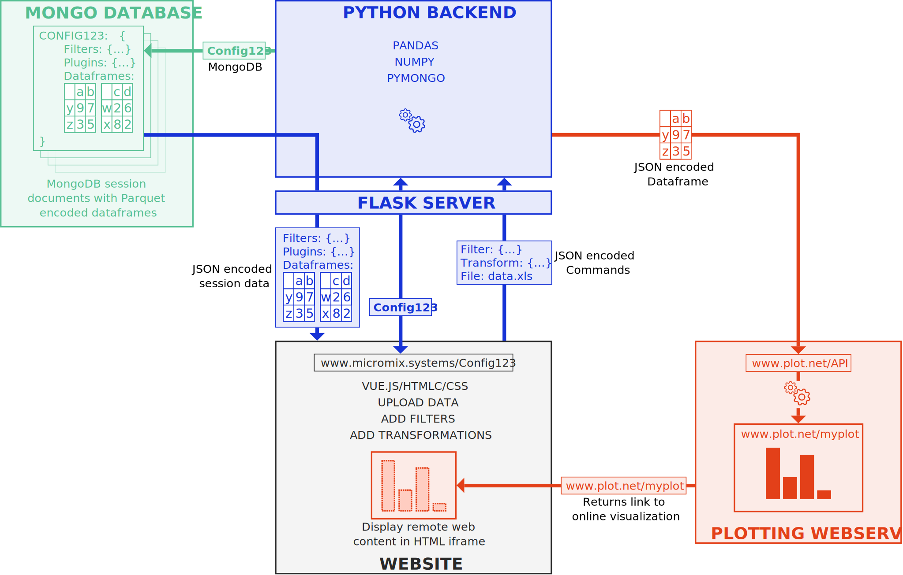

🧮
🔬 General Purpose
🧬 Bioinformatics
🔗 Sharing
MicroMix's core feature is its visual programming system. Programmable forms and logical and/or gates can be added, stacked, and customized. By combining filters and data transformations, researchers can easily perform complex data science without any coding experience.
Interactive high-performance WebGL heat map for visualizing large datasets in 2D and 3D. Seamlessly integrated in MicroMix.
The 3D view improves the search for outliers, clusters, and makes fine nuances in the data obvious that are otherwise invisible.
2D
Much of the color-encoded information in 2D is lost due to extreme values.
3D
The same data in 3D shows that there are big differences even in lower value ranges.
MicroMix consists of a Vue.js frontend, Python backend, and a MongoDB database. Python's powerful Pandas and NumPy libraries enable efficient computations even with large datasets. Sessions are stored in the highly efficient Apache Parquet format.
